TP 1:
Objectif:
1 Objectif
L’objectif de la séance consiste à modéliser sous FlexPDE un solide composé d’un matériau en aluminium de base rectangulaire. Le solide est placé entre les deux mors d’une machine de traction dont la partie inférieure est fixe tandis que la partie supérieure est mobile. La contrainte imposée, \(\sigma_{0} = 10~Mpa\), est uniforme dans la direction \(-j\).
Le matériau en aluminium a comme caractéristiques :
- \(E=70\cdot10^9~Pa\)
- \(\nu = 0.33\)
La longueur de l’éprouvette considérée est de \(30~cm\) et de côtés égaux \(3~cm\).
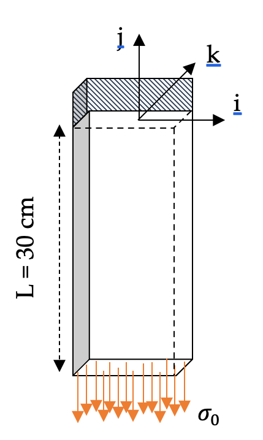
Quelle hypothèse (contrainte plane ou déformation plane) semble la plus adaptée pour traiter le problème précédent en 2D ? Justifier et dessiner la pièce qui sera alors modélisée.
Compléter et commenter le programme incomplet fourni sur Arche.
Analyser les résultats.
Remplacer les caractéristiques du matériau étudié (module de Young et coefficient de Poisson de l’acier et du cuivre). Comment vont alors évoluer les déformations ?
1.1 Code Version etudiants
TITLE
"Essai de Traction"
SELECT
errlim=4e-5
! painted
VARIABLES
DEFINITIONS
larg=
Long=
E=
nu=
sigma0=
lamb= nu*E/(1+nu)/(1-2*nu)
mu=
exx=dx(u)
exy=
eyy=
ezz=
sxx=
sxy=
syy=
EQUATIONS
BOUNDARIES
region 1 "contrainte_1"
start(-larg/2,0)
value(u)=0
Value(v)=0
line to (-larg/2,-Long)
line to close
PLOTS
grid(x+1e3*u,y+1e3*v) {Visualisation de l'éprouvette déformée avec un facteur d'accentuation}
vector(u,v) as "Vecteur deplacement"
elevation(v) from (0,0) to (0,-Long)
elevation(syy) from (0,0) to (0,-Long)
END1.2 Resolution de l’Exercice 1
TITLE
"Essai de Traction"
SELECT
errlim=4e-5 {Précision de l'erreur limite}
! painted
VARIABLES {Inconnues du problème}
u
v
DEFINITIONS
! Geometrie
larg=0.03 {Dimensions de l’éprouvette : largeur}
Long=0.3 {Dimensions de l’éprouvette : longueur}
! Matériaux
E=210e9 {Caractéristique du matériau : Module de Young}
nu=0.3 {Caractéristique du matériau : Coefficient de Poisson}
! Contraintes
sigma0=10e6 {Valeur de la contrainte imposée}
! Coeficients de Lamé
lamb= nu*E/(1+nu)/(1-2*nu)
mu=E/2/(1+nu)
! Matrice de Déformation
exx=dx(u) {Deformation normale XX}
eyy=dy(v) {Deformation normale selon YY}
ezz=-lamb/(lamb+2*mu)*(exx+eyy) {Deformation normale selon ZZ}
exy=0.5*(dy(u)+dx(v)) {Deformation tangentielle XY}
! Matrice de Contraintes Selon Loi de Hooke
sxx=(2*mu)*exx+lamb*(exx+eyy+ezz) {Contrainte normale XX}
sxy=2*mu*exy {Contrainte tangentielle XY}
syy=(2*mu)*eyy+lamb*(exx+eyy+ezz) {Contrainte normale YY}
EQUATIONS
u:dx(sxx)+dy(sxy)=0 {Equation d'équilibre local pour le déplacement u}
v:dx(sxy)+dy(syy)=0 {Equation d'équilibre local pour le déplacement v}
BOUNDARIES
! Définition de la géométrie de l'éprouvette
! A --> B
region 1 "contrainte_1"
start(-larg/2,0)
Value(u)=0 {Valur de deplacement en sens U}
Value(v)=0 {Valur de deplacement en sens V}
line to (larg/2,0)
! B --> C
Natural(u)=0 {Valur de contrainte en sens U}
Natural(v)=0 {Valur de contrainte en sens V}
line to (larg/2,-Long)
! C --> D
Natural(u)=0
Natural(v)=-sigma0
line to (-larg/2,-Long)
! D --> A
Natural(u)=0
Natural(v)=0
line to close
PLOTS
! Visualisation de l'éprouvette déformée avec un facteur d'accentuation
grid(x+1e3*u,y+1e3*v)
! Vector Graphique
vector(u,v) as "Vecteur deplacement"
! Contour
contour(u)
contour(v)
contour(sxx)
contour(syy)
! Elevation
elevation(v) from (0,0) to (0,-Long)
elevation(sxx) from (0,0) to (0,-Long)
elevation(syy) from (0,0) to (0,-Long)
elevation(exx) from (-Larg/2,-Long/2) to (Larg/2,-Long/2)
elevation(eyy) from (0,0) to (0,-Long)
elevation(syy) from (-larg/2,0) to (larg/2,0)
END1.3 Figures
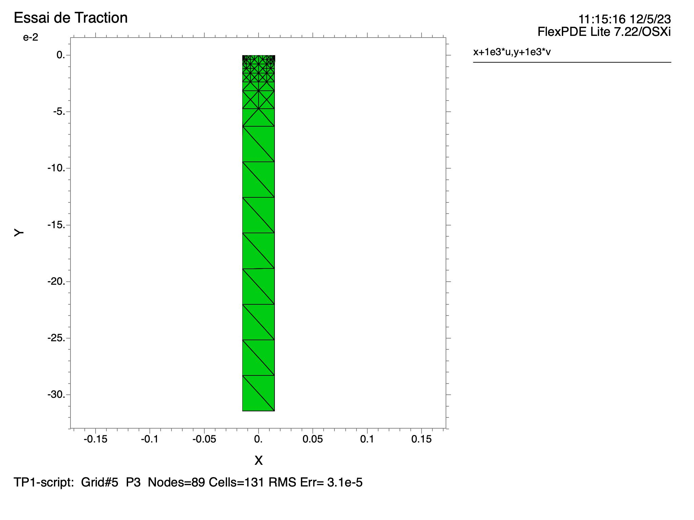
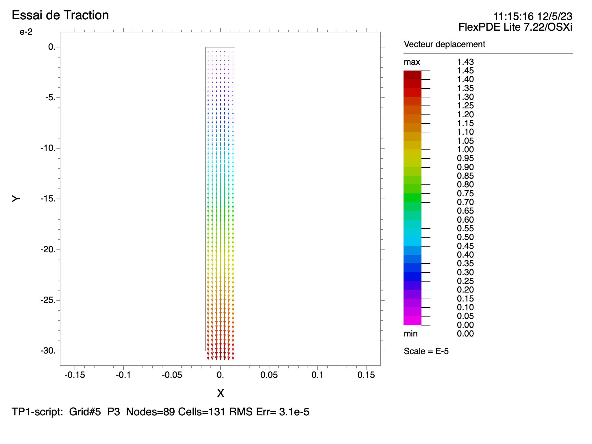
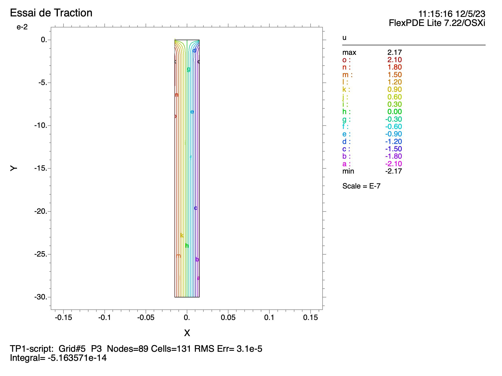
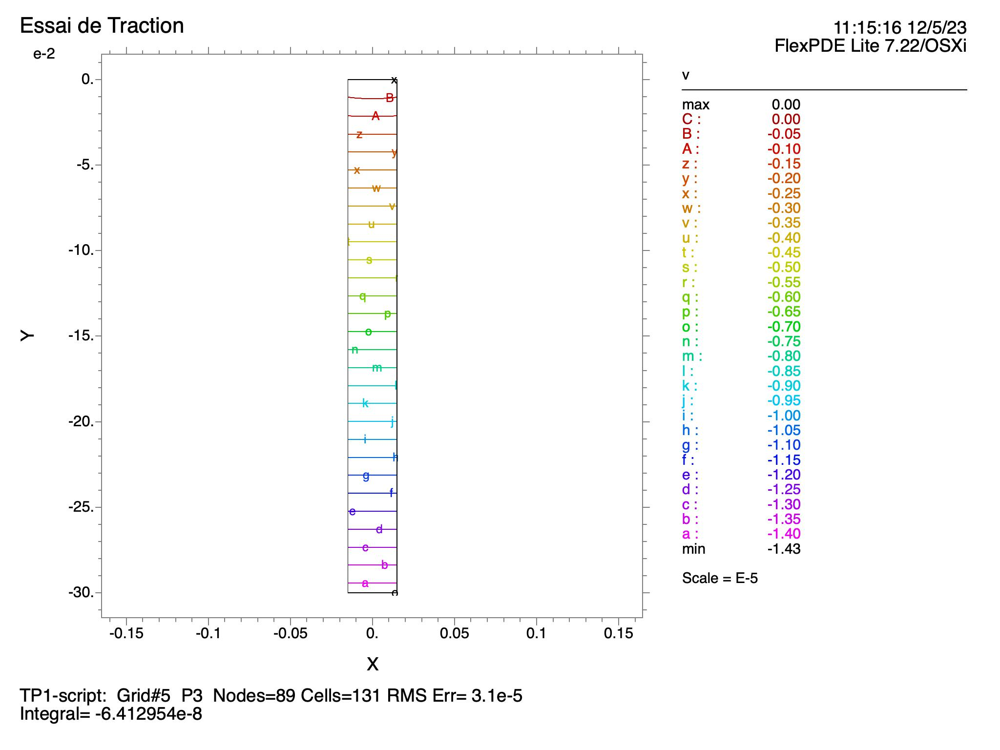
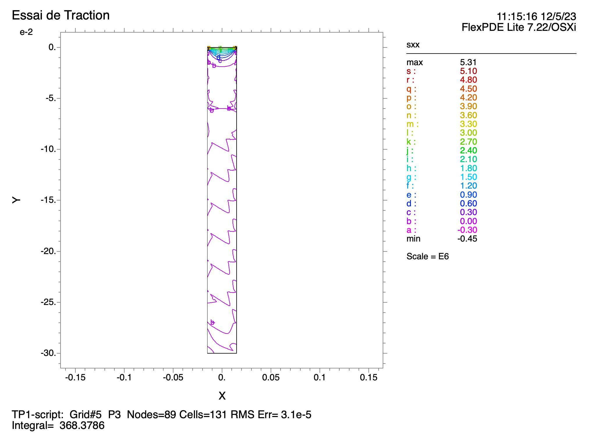
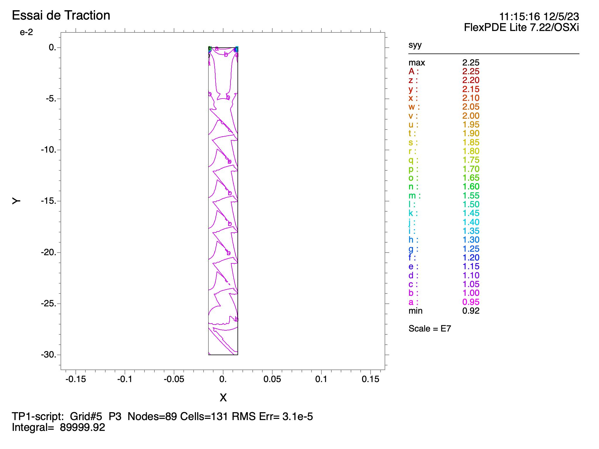
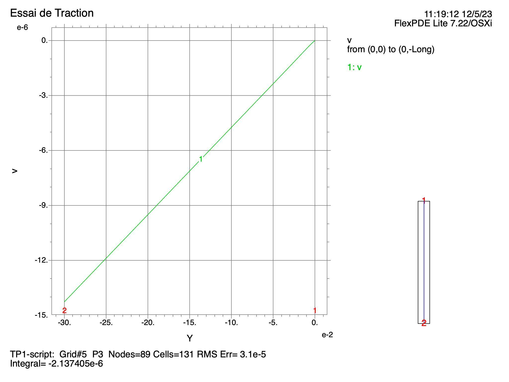
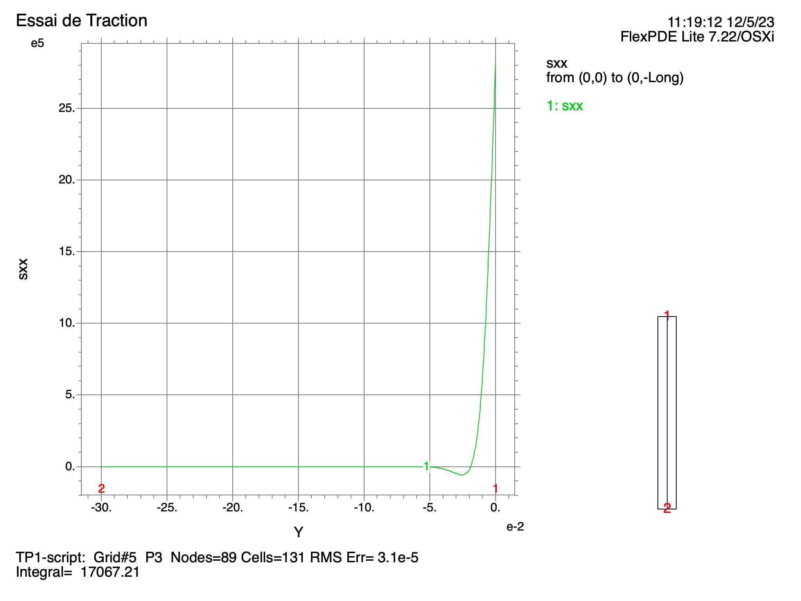
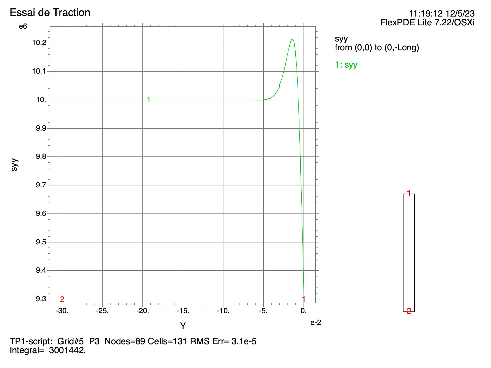
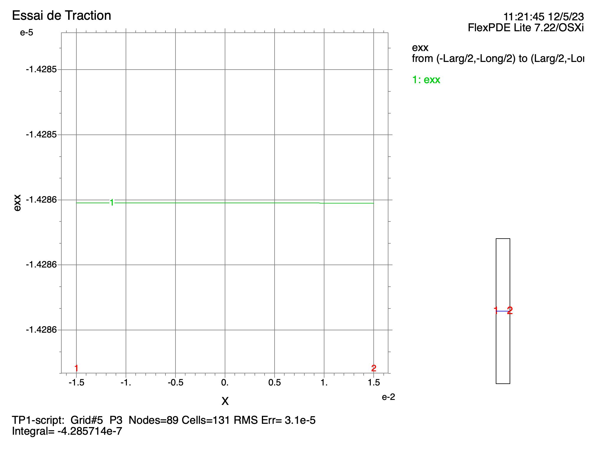
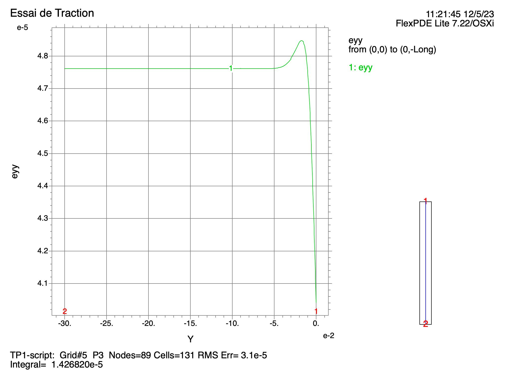
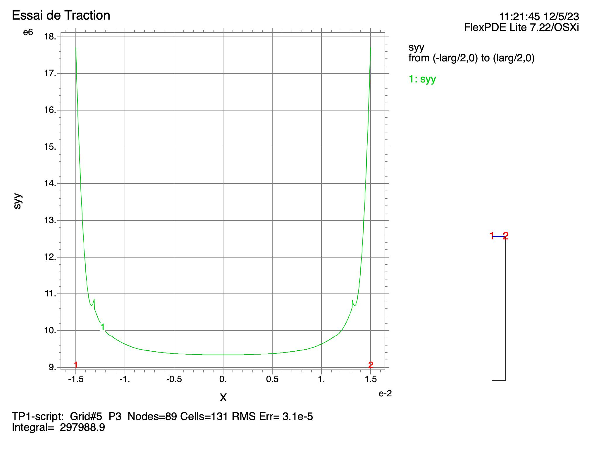
1.4 Resolution de l’Exercice 1
TITLE
"Essai de Traction"
SELECT
errlim=4e-5 {Précision de l'erreur limite}
! painted
VARIABLES {Inconnues du problème}
u
v
DEFINITIONS
! Geometrie
larg=0.03 {Dimensions de l’éprouvette : largeur}
Long=0.3 {Dimensions de l’éprouvette : longueur}
! Matériaux
E=210e9 {Caractéristique du matériau : Module de Young}
nu=0.3 {Caractéristique du matériau : Coefficient de Poisson}
! Contraintes
sigma0=10e6 {Valeur de la contrainte imposée}
! Coeficients de Lamé
lamb= nu*E/(1+nu)/(1-2*nu)
mu=E/2/(1+nu)
! Matrice de Déformation
exx=dx(u) {Deformation normale XX}
eyy=dy(v) {Deformation normale selon YY}
ezz=-lamb/(lamb+2*mu)*(exx+eyy) {Deformation normale selon ZZ}
exy=0.5*(dy(u)+dx(v)) {Deformation tangentielle XY}
! Matrice de Contraintes Selon Loi de Hooke
sxx=(2*mu)*exx+lamb*(exx+eyy+ezz) {Contrainte normale XX}
sxy=2*mu*exy {Contrainte tangentielle XY}
syy=(2*mu)*eyy+lamb*(exx+eyy+ezz) {Contrainte normale YY}
EQUATIONS
u:dx(sxx)+dy(sxy)=0 {Equation d'équilibre local pour le déplacement u}
v:dx(sxy)+dy(syy)=0 {Equation d'équilibre local pour le déplacement v}
BOUNDARIES
! Définition de la géométrie de l'éprouvette
! A --> B
region 1 "contrainte_1"
start(-larg/2,0)
Value(u)=0 {Valur de deplacement en sens U}
Value(v)=0 {Valur de deplacement en sens V}
line to (larg/2,0)
! B --> C
Natural(u)=0 {Valur de contrainte en sens U}
Natural(v)=0 {Valur de contrainte en sens V}
line to (larg/2,-Long)
! C --> D
Natural(u)=0
Natural(v)=-sigma0
line to (-larg/2,-Long)
! D --> A
Natural(u)=0
Natural(v)=0
line to close
PLOTS
! Visualisation de l'éprouvette déformée avec un facteur d'accentuation
grid(x+1e3*u,y+1e3*v)
! Vector Graphique
! Contour
! Elevation
END